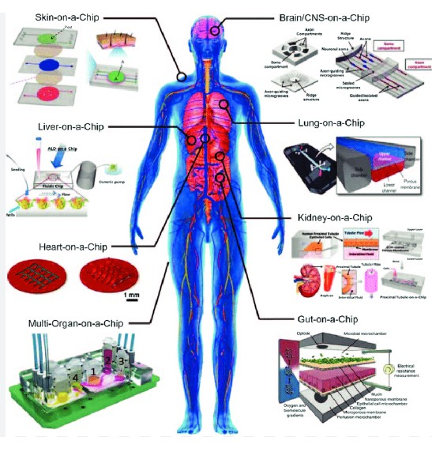
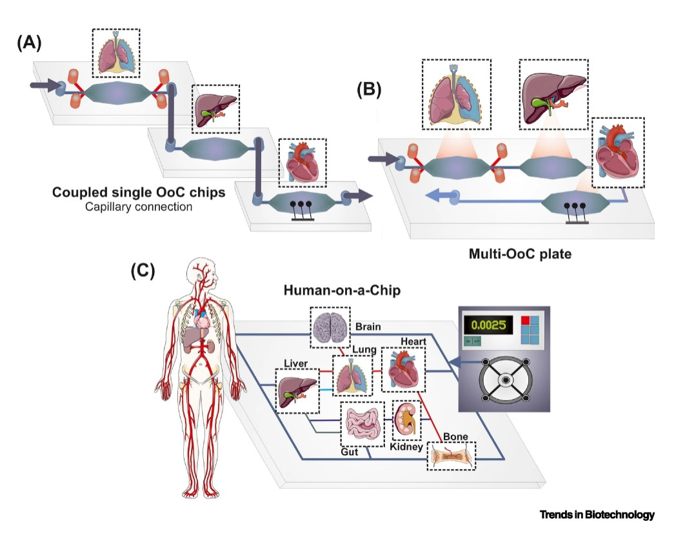

Una mirada a la investigación
La pandemia del SARS-COV-2 nos ha recalcado nuevamente la importancia que tiene el preservar nuestra salud, del costo de vida que tiene el crear un solo medicamento y del tiempo que requerimos para hacerlo seguro para el consumo humano.
Afortunadamente, gracias al ingenio de miles de científicos, estamos entrando en una era la cual la bioingeniería y la biomedicina hacen posible el desarrollo de medicamentos, vacunas y cura a enfermedades más sostenible; por medio de Human Organs on Chips.
¿Qué es un órgano en un chip?
Pero, ¿Qué es Human Organ on a Chip? o en sus siglas en español, Órganos humanos en un chip. En pocas palabras, es un dispositivo tecnológico que contiene micro fluidos; donde se colocan distintos tipos de células (comúnmente células madre por su versatilidad), con el propósito de crear un microambiente que simula las condiciones de un órgano humano. Asimismo, otro de sus beneficios, más allá de la precisión; sin lugar a dudas, ventajosa para el área de conocimiento de las ciencias naturales, es la mejora ética en las pruebas para la aprobación de medicamentos y/o vacunas.

El desarrollo de medicamentos
Actualmente, para generar un medicamento los estudiosos de la ciencia proponen alrededor de 10.000 moléculas como posibles drogas para una condición médica. Luego, con estas moléculas, se inicia la fase in vitro, donde se imita la reacción del ser humano; por medio de placas petri y cultivos celulares, probando en estos las moléculas candidatas. Tras la respuesta, se descartan las negativas y las aprobadas pasan a la fase in vivo; donde se testea en animales genéticamente parecidos al humano. Tras ello, las que responden positivamente son finalmente probadas en pacientes voluntarios; donde el medicamento correcto sale a la venta después de ciertos análisis y seguimiento al paciente.
No obstante, este proceso toma en promedio 10 años; 3 billones de dólares; el sacrificio de 115 millones de animales y el desacierto del 92% de las moléculas testeadas en pruebas humanas, demostrando la lentitud e inmoralidad de producir productos nuevos en el sector de la salud. Querramos o no, una placa o petri o un animal jamás podrán igualar la complejidad del cuerpo humano. Es por todas estas razones, que human organ on a chip permite eficacia, rapidez y ética en los procesos de para tratar patologías diversas.

Nuevas posibilidades
El instituto WISS de Harvard, por el momento ya ha creado varios órganos siendo el primero un pulmón en el 2010; posteriormente se generaron simularon intestinos,una célula ósea, riñones, entre otros; obteniendo valiosa información de enfermedades como la malaria, influenza, malnutrición, exposición a radiación y el COVID-19. Este conocimiento ya está al alcance de 150 laboratorios; 17 de los cuales pertenecen a las compañías de biofarmaceutica top del mundo.
Se espera en un futuro cercano, se pueda generar un humano completo en un chip y que esta revolucionaria tecnología llegue a manos de todo científico, ingeniero o estudioso de la ciencia para hacer pruebas más éticas, eficientes y sostenibles para el bien de la humanidad.